In 1933, an unusual truck arrived at Chicago’s World Fair; it carried a log cabin covered in a variety of hand-made items. It was driven by Lucy Morgan, determined to spread the word about a school she had founded in the Blue Ridge Mountains of North Carolina. Today the Penland School of Craft is one of the top international centers of craft instruction and a magnet for creative makers across the country. Its website explains it “offers total-immersion workshops in sixteen beautifully equipped studios along with artist residencies, a gallery and visitors center, and community programs.” If you made a New Year’s resolution to learn something new, there’s no better place to take up ceramics, jewelry making, ironwork, woodworking or a dozen other creative pursuits and to join a vibrant community of artists.
Lucy Morgan’s “Travelog” brought Appalachian crafts to the Chicago World’s Fair of 1933
In 1923, Morgan, who taught at her brother’s Appalachian Industrial School, was inspired to teach local women weaving to develop a marketable product and relieve rural poverty in North Carolina. Part of a national crafts revival, she was dedicated to preserving hand craftsmanship. Learning to weave at Berea College, she established the Penland Weavers. Morgan invited renowned weaver Edward F. Worst (Director of Handwork at the Chicago Public Schools) to work with the students. From 1928 until his death in 1949, Worst would return to teach a summer and later a spring session at Penland, attracting out-of-state students. Other crafts were gradually added, and the school gradually gained a national reputation as the Penland School of Handicrafts.
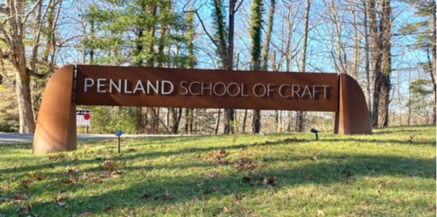
Penland School of Craft, now the name of the school
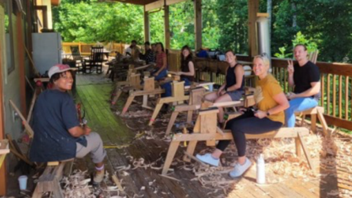
Penland Woodworking class www.penland.org
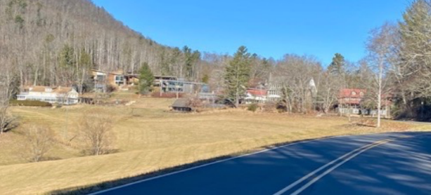
The Penland campus comprises 420 acres and 57 buildings.
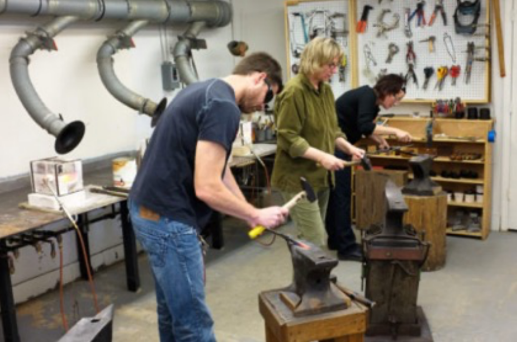
Penland Metals studio www.Penland.org
When Morgan retired in 1962, her successor, sculptor Bill Brown, brought fresh energy and over the next 21 years added new programs and raised the school’s visibility internationally. A robust community of artists and craftsmen was attracted not just to study but to live. Twin sisters from Memphis, Tennessee would join him to help at the school and change their lives forever, as Penland has done for hundreds of
area residents.
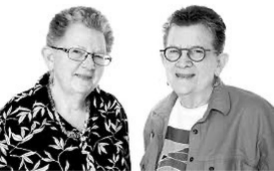
Cynthia and Edwina Bringle
Cynthia and Edwina Bringle, both nationally celebrated as a ceramicist and weaver respectively, were there at the beginning of Brown’s tenure. Driving home to Memphis in 1962 from Alfred University in New York where Cynthia was working on her master’s degree in art, the twins stopped at Penland for two weeks so Cynthia could help her friend Bill Brown move into his new role as director. While her sister was already deep into her ceramic work, Edwina, a radiologic technician, had yet to take up a craft. “I didn’t have anything to do, so I helped wash dishes and things like that. Bill said, ‘go to the weaving room and Helen Henderson can help you.’ That was the first weaving that I did… People ask me how I knew I would be a weaver. I didn’t know. I just never quit.”
Edwina, now 85, continues to take classes at Penland that influence her weaving and love of color – she’s explored metals, iron, book arts, photography – “all of those slides I took through the years… I could go back and find a slide somewhere that inspired [a weaving] …For me, [weaving] is playing with color. I’d rather be under the loom and have to struggle to get up than to be on a computer and deal with that end of things.”
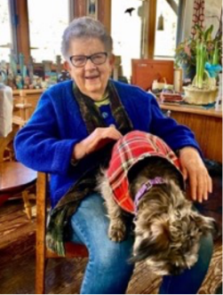 Edwina Bringle |
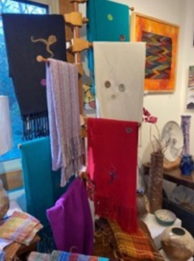 Handwoven scarves in the Bringle Gallery |
Edwina has five looms and works on various ones simultaneously as her design concepts evolve. “I might put colors together for a warp, but it might be two more weeks before I figure out what the weft, the cross threads, are. I keep playing…I go to a class and the teacher says, ‘what are you doing here?’ My answer is you can learn from everybody…keep an open mind.” Teachers rightly question why Edwina is taking a class; she was an art professor at the University of North Carolina, Charlotte for 24 years. She has been in dozens of local and national juried exhibitions and has taught at Penland off and on since the 1960s. She moved to the Penland area in 1997 to become a studio artist.
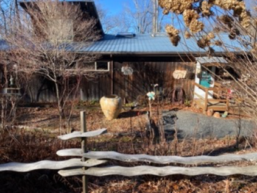
Bringle Gallery and Studio
Sharing a gallery and studio with her sister Edwina, Cynthia, is also still an active studio artist. Interested in art as a child, she earned her BFA at Memphis Academy and got her master’s in art at Alfred University in New York. She set up her studio in Tennessee but maintained her connection to Penland and Bill Brown’s vision. “After several summers spent teaching at the Penland School of Craft, I realized the North Carolina mountains were calling me. Although there were only a few studios in existence at the time, I had a sense it would become a community of artists,” she explains on her website.
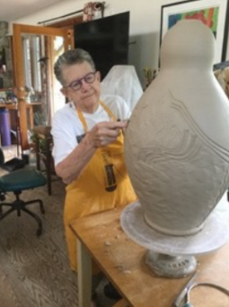
Cynthia Bringle in her studio cynthiabringlepottery.com
Today, Cynthia is affectionately known as the Mayor of Penland. But her actual honors are very real: North Carolina Award for Fine Art (the state’s top honor), North Carolina Living Treasure, Lifetime Membership by the Southern Highland Craft Guild, Honorary Doctorate from Memphis College of Art. Member of American Craft Council College of Fellows, Trustee Emeritus of The American Craft Council, Former Board Member of Penland School of Craft. Warm and welcoming to her gallery and studio, Cynthia shows her work that exemplifies the quality for which Penland instructors are known.
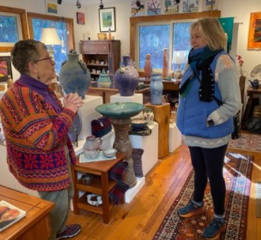
Cynthia Bringle shows her recent work to Connie Schulze, incoming president of Toe River Arts
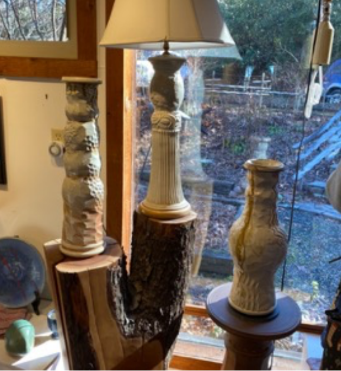 In the Bringle Gallery |
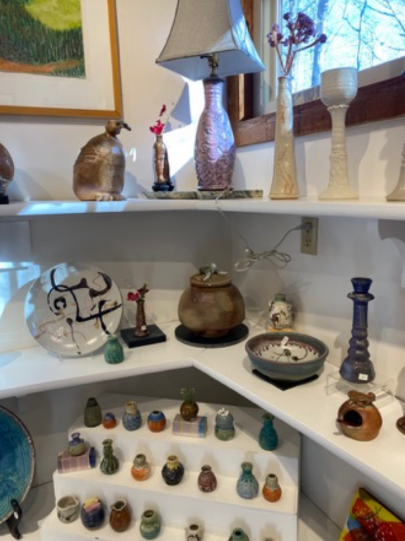 |
Her distinctive style is appreciated by devoted customers. “I, like many people who work in clay, do a lot of mugs…I have gotten little boxes in the mail with mugs in pieces…’ this is my favorite mug, I broke it, send me another one…’” she said. From mugs to lamps to plates, she continually expands her output to include almost the proverbial kitchen sink. ‘I’ve been working with some porcelain recently. I have several wheels here…one wheel I work on in porcelain and the other one in stoneware. My last kiln load had five bathroom sinks in it…I’ve sold all but two so I’m probably going to make some more.”
The beloved Bringle sisters are part of a community of an estimated 500 artists who live in the two- county (Mitchell and Yancey counties) area, many attracted by Penland. Valerie Schnaufer, also a ceramic artist, moved here 17 years ago. “I was fortunate enough to take an eight-week concentration [at Penland] back in the early 2000’s, having heard about it for years…we were living in Florida, and I’d been taking classes and workshops… but nothing as intensified and concentrated as Penland,” said Schnaufer. “We could have lived anywhere in the world at this point and had thought about leaving Florida… I didn’t really know anyone but accompanied a friend here; I found [the property known as] Rabbit Hop and called my husband. A year later, they sold their Florida property and moved to the mountains. “[Penland] totally changed my career.”
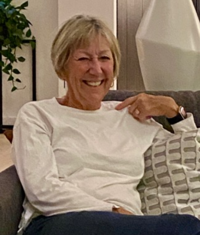
Valerie Schnaufer
“When I got here, I never really thought about selling my work… I continued taking classes and after three years entered my first show at Toe River Arts and sold a piece! I was just surrounded by amazing, well-known artists and innovative contemporary artists… I was lucky I found a niche; many artists go back generations… I love nature and brought back many objects from nature [to my studio]…I started making what I call dwellings.” Her natural treasures find homes in her ceramic windows.
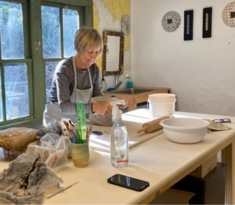
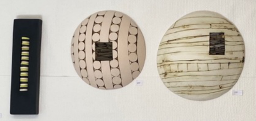
Schnaufer’s work is now shown in many galleries in the area, but she credits Toe River Arts with her new focus, just as she credits Penland with leaving Florida. “Without Penland I wouldn’t be here. Our two small rural counties have over 500 working artists. Many have the same story I do. They came to Penland and decided to stay.”
“The main thing is that people think they have to be already good to come here,” observed Cynthia Bringle. “Everybody is welcome here; everyone is treated the same, whether you’re a beginner or more advanced. You’ll see a faculty member who is taking a class because they want to be back here… So don’t come here with expectations, come with an open mind.”
Jim Waters was a contractor in Wisconsin, making art on the side, taking classes at the University of Wisconsin, White Water. His instructor suggested he take a class at Penland. He did and several years later, he and his wife Robin moved to the area. “It was extremely welcoming to the arts. It was very supporting. Our little arts council, Toe River Arts… It’s pretty famous nationally for its studio tour… They accepted me and I’ve had 20 years of making art and enjoying it here…Penland will make the career of an artist. It’s a given that if you do well at Penland, you’ll have a fine tell and you’ll have a backing.”
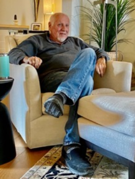 Jim Waters |
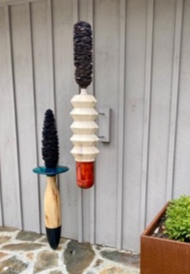 Jim Waters sculpture |
His wife, Robin Warden, pointed out that you can also afford to raise a family here. A former college professor, she has curated exhibitions at Toe River Arts and started a business integrating local art into interior design. She has also led tours of Penland. “Some people totally get the whole art scene and the beauty of all the mediums and …are amazed at the avantgarde work they see. Then there are others perhaps on vacation who say, “that’s how much?” A public educated about the value of contemporary craft is not only a Penland goal, but also a goal of the nonprofit council Toe River Arts, which in its own words “was founded to promote and encourage the existing cultural and educational organizations of Mitchell and Yancey Counties, North Carolina.” Toe River Arts’ tours, classes, and gallery extend the impact of the artistic community throughout the two-county area and beyond.
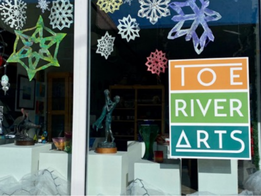
I first learned about Penland from my brother-in-law Neil Richter and his wife Connie Schulze over 35 years ago when we visited them at their home in Spruce Pine, NC, a few miles from Penland. They had discovered Penland after their work as school psychologists took them to the area. The couple became active at Penland, volunteering at the benefit auction and taking classes. Connie’s artistic focus was creating jewelry. She took classes at Penland and sold pieces at Toe River Arts. Today, she is the incoming president of Toe River Arts and sees it as a critical community asset. “Many artists, like Val Schnaufer, launched a totally new career at the Toe River Arts. Our tours enable visitors to visit artists in their home studios and learn to appreciate the challenges of creating beautiful and functional work,” she said.
Schulze knows she will have to deal with the larger context of the arts today. “There are many pressures on the arts in the 21st century. Economic uncertainty, evolving values and interests, the trend toward a throwaway culture versus preserving and collecting, an emphasis on experiences rather than ‘things.’ Sustaining creativity in this context and providing the needed support to those who create art are challenges for institutions like Penland and Toe River Arts,” she said.
Community is the connecting thread among all the artists I have met over several trips to the area, known for its beautiful mountain views and moderate climate. Cynthia Bringle expresses it perhaps best: “Moving up here means you have many more connections with artists and that’s one of the reasons I moved here and the other reason is that the North Carolina Mountains do something for my soul.”